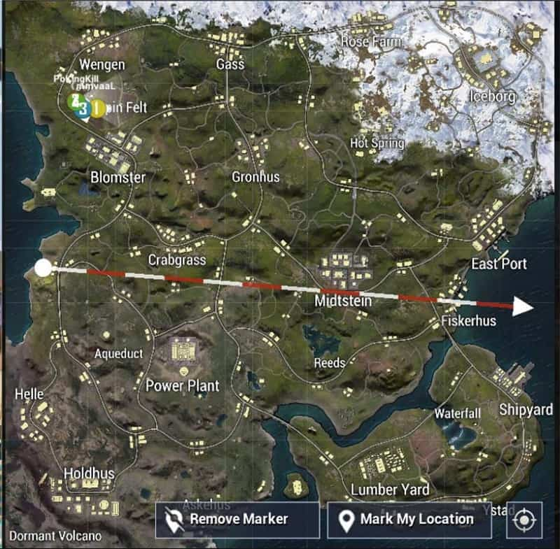
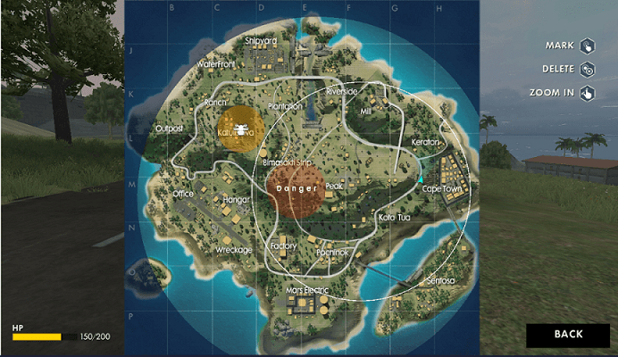

Tips for Livik Map for new players in PUBG:

---> Hot drops in the Livik map as of now are powerplant and Midstien.
So if you are a new player in the game then try avoiding these two places.
Loot is everywhere in Livik so don’t worry too much that you won’t get any good weapons.
You can easily get a scar16 or AK with some scope almost everywhere.
---> Avoid using vehicles of any kind in the Livik map. Since the map is so small you will be better off travelling by foot.
Using cars or the monster truck will alert enemies nearby of your arrival and with only 52 players on a small map you can bet on campers sniping you.
---> Avoid drops on this map. Run far away from them. Drops on Livik map are surrounded by players from all directions so if you even try going near a drop you will be attacked from all sides.
The Livik map is small and very dangerous for drop looting.
---> When you are at the end of the game then camp and fill up the boost and use health kits. When you will be engaging with the opponents in the end it is absolutely crucial that your boost and health are full.
Having a full boost bar also gives you a speed advantage in PUBG Mobile.
---> Do not loot every opponent you kill. In a map like Livik what works is staying away from danger and shooting opponents from a distance. You should always be in some cover if you want to eat that Chicken dinner. Using silencer is going to give you a huge advantage.
---> Here are some tips that can help you in your Livik Map game. This is not a step by step guide or a strategy guide. These tips will only guarantee your survival in the game for a prolonged period of time.
Everything else depends on the skills of the player. So use the tips here and have fun on Livik.
Tips to Play Garena Free Fire:
Below are some of the tips you can use while playing Garena Free Fire.
1. Get Started – Where to land:
This is the foremost thing which you should focus on. Your landing will tend to have the majority of effect on your further game-play. Make a habit to land close to the outskirts of the city where you will be reachable to weapons, medical kits, ammo, and other equipment.
Don’t fear to fly a little further out or else you will be landed near your enemies (a crowded place), consequently increasing your chances of being killed early.

2. Keep an eye on the Minimap:
A minimap is a vital tool that will not only assist you to check the safe zone but will also warn you of where danger looms. You should always be aware of your location and tend to find the navigation of your enemies.
Also, being notified will help you to know about the shots coming from, this way you will be able to take cover or use the opportunity to attack. You can also kill two competitors at once with this trick.
3. Avoid Exposure – Sprint between Cover
:
Never stay out in the open for a long time, especially in case of danger zones. You don’t know what’s gonna come next! Sprint between open fields and make liberal use of any objects nearby. You can also try staying crouched to avoid detection, and even going prone may help.
Furthermore, in the case of combat, have a proper understanding of sprint and cover in order to act with timing.
4. Get yourself always geared up!
Make it a compulsory habit of being always geared up. Always look for a better weapon but always remember a smaller gun with full ammo is always better than a bigger gun with few ammo. Go for the right weapon for different encounters.
Tips for Call of Duty Modern Warfare:
Tune your default settings
If your movements feel sluggish and leave you unable to address incoming enemies in a timely fashion, the fix might be deceptively simple: check your settings.
On PC, for example, the default aim sensitivity is ridiculously low, so if you want a fighting chance in the online multiplayer arena you'll need to amp that setting up to the highest degree of sensitivity you can handle. You'll move faster and be exponentially more lethal once you're off the game's default presets, so be sure to tweak these early on in your multiplayer experience. Adjusting visual settings like field of view (a PC-exclusive setting) and brightness can help give you an edge as well.
Play the objective (seriously, do it)
No one likes a teammate who doesn't help win the round — that's why no one likes each other on Call of Duty multiplayer. Playing the objective might seem like common sense, but at least half the players in any given match won't do it.
So do the Modern Warfare community and your team a favor and always play the objective. Kill-death ratio means nothing if you're constantly losing matches, so don't fret over K/D. Capture the control point, defend your team's headquarters, etc. Unless you're playing Team Deathmatch, focus on completing the objective before you get your jollies gunning down the opposition.
Ease off the reloads
Statistics show that globally, at least two hundred CoD players die every five seconds due to a poorly timed reload. It's understandable that you want to be as prepared as possible before going into your next firefight; the issue is, you'll never know when that next firefight might be. Odds are, it's going to start when you're in the middle of an unskippable reload animation.
A good way to avoid getting merc'd is to resist the urge to reload right up until you're down to your last bullet or two. Then, find a safe, enemy-free zone surrounded by allies. Reload there, and you're sure to stay alive a lot longer than if you reload right after killing a guy in the heart of disputed territory.
Use it or lose it
Call of Duty is a franchise predicated on kill trading. Modern Warfare is no different. Maps are designed in such a way that for every foe you take down, someone else will down you. So don't die with grenades and equipment intact. Use them to stay alive for an extra few seconds!
Since the odds of dying within a minute of spawning in a standard round of Team Deathmatch are astronomically high, throw every grenade, molotov, and gadget at your disposal without hesitation.
Lob a frag into a room before you enter, toss a C4 in the air and pop it just for fun; the point is, these tools will ensure a miniscule portion of the map is temporarily free from enemy danger, so use them before you lose them. Modern Warfare does not reward preparing for the future, only for the now.
Optimize loadouts
Modern Warfare's default loadouts are fine and definitely give players a fighting chance, but as you move up the ranks and start unlocking more guns, attachments, gadgets and kill streaks, it's definitely a good idea to start tinkering with your own custom loadout so you have a unique kit specifically tailored to your needs.
You can pick your guns, add attachments like scopes and muzzles, choose between a wide variety of secondary tools and perks and do even more with Modern Warfare's in-depth loadout customization system, so make sure you explore your options.
Be a snake in the grass
Modern Warfare's tall grass is designed for one thing: sneaky, cheap kill farming. So crouch, go prone, or shimmy around, but whatever you do, keep your head low and let the grass do the work for you. Just like in real life, tall grass serves as excellent camouflage and all but ensures most players will run past you without a second glance.
This means you, the prospective foliage camper, can net a ton of kills just by shooting people in the back as they run past you. Or shoot them in the face as they run toward you! Either way, they'll never see you coming.
Stay on your feet
It's no secret that camping, a phenomenon wherein a player hides in a spot and refuses to move for most of the match, has plagued the Call of Duty franchise's multiplayer practically since its inception. And while instances of camping-friendly turf still exist in Modern Warfare, such as with the tall grass we've referenced, the game's developers have gone to great lengths to ensure most maps discourage camping.
Maps are set up in such a way that most rooms are exposed from multiple angles and almost every hallway has a surprising amount of windows, doorways and other entrances with which to eliminate camping chokepoints. So if you want to stay alive for more than a hot second, keep those boots shuffling. Kill, relocate, and live to kill again.